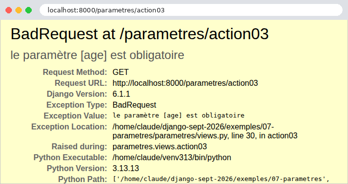
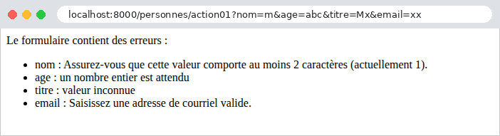

3. Le modèle d'une vue
Une vue a besoin des informations envoyées par le navigateur : les paramètres de l'URL ([?nom=martin&age=42]), les champs d'un formulaire, le corps JSON d'une requête, parfois un entête HTTP. Le cours d'origine appelle modèle de l'action l'ensemble de ces informations ; nous dirons ici le modèle de la vue. Ce chapitre montre comment une vue [Django] les obtient, les convertit dans le bon type et les valide. Ce travail s'appelle la liaison de données (data binding).
[Django] donne accès aux informations de la requête par l'objet [HttpRequest] (exemple 05), sous forme de chaînes de caractères. Pour les convertir et les valider, il a un outil, unique et central : les formulaires, du module [django.forms]. Un formulaire [Django] est une classe qui décrit les données attendues, champ par champ : chaque champ sait convertir la chaîne reçue dans son type (un entier, une date, une liste...), et vérifier des contraintes (« obligatoire », « un entier entre 0 et 150 »...). Malgré leur nom, les formulaires ne servent pas qu'aux formulaires HTML : ils valident aussi bien les paramètres d'une URL ou un document JSON. Nous lirons d'abord les paramètres à la main (exemple 07), puis nous confierons leur conversion et leur vérification à des formulaires (exemples 08 à 12). Au chapitre suivant, les mêmes formulaires sauront aussi s'afficher en HTML.
Attention au vocabulaire : le mot « modèle » a, en [Django], un sens précis, celui des classes de l'ORM (chapitre 7). Le modèle d'une vue, au sens de ce chapitre, est ce qu'elle reçoit de la requête. Nous rangerons les classes qui le décrivent dans des fichiers [modeles.py], jamais [models.py], réservé à l'ORM.
Les exemples 07 à 12 se lancent comme ceux du chapitre précédent : un terminal ouvert sur le dossier de l'exemple, l'environnement virtuel activé, [python manage.py runserver] ; [Ctrl-C] arrête le serveur. La plupart ont le middleware [JsonLisible] de l'exemple 03, pour un JSON lisible. Nous ne commenterons leurs fichiers de configuration que lorsqu'ils apportent quelque chose de nouveau.
3.1. Exemple 07 : les paramètres de l'URL
Les paramètres de l'URL sont la partie qui suit le [?] : [?nom=martin&age=42]. Cette partie s'appelle la chaîne de requête (query string). Chaque paramètre est un couple [nom=valeur] ; les couples sont séparés par des [&]. Les vues de l'application [parametres] :
- ligne 12 : l'attribut [GET] de la requête contient les paramètres de l'URL. Son nom est trompeur : il existe quelle que soit la méthode de la requête, y compris pour une requête POST dont l'URL a des paramètres. C'est un objet [QueryDict], un dictionnaire dont la méthode [get] rend la valeur d'un paramètre, déjà décodée, ou [None] s'il est absent ;
- ligne 13 : la vue affiche la valeur, et son type : [type(nom)] rend la classe de la valeur, et [__name__] le nom de cette classe. Une valeur tirée de l'URL est toujours une chaîne ([str]) ;
- lignes 26-36 : un paramètre obligatoire, et une conversion faite à la main, qui distingue les deux erreurs possibles. L'opérateur [is] teste l'identité : [texte is None] est la façon correcte de tester l'absence de valeur. [raise BadRequest(message)] arrête la vue par une réponse 400 (Bad Request : la requête est incorrecte), comme [Http404] arrêtait la vue par une réponse 404 (exemple 03). La fonction [int] convertit une chaîne en entier, et lève l'exception [ValueError] si la chaîne n'est pas un entier : le bloc [try] / [except] intercepte cette exception, pour répondre par notre propre erreur ;
- ligne 42 : le second paramètre de [get] est une valeur par défaut, utilisée si le paramètre manque. C'est le cas typique du numéro de page d'une liste. On remarque que la valeur par défaut est une chaîne, ["1"], comme le serait la valeur reçue ;
- ligne 50 : rien n'oblige à nommer la variable [Python] comme le paramètre de l'URL. Les moteurs de recherche utilisent souvent un paramètre court, [q] (query) ;
- ligne 57 : [dict()] rend tous les paramètres de l'URL, dans un dictionnaire [Python] ordinaire, que la vue convertit en JSON (exemple 03).
Testons chaque vue avec [curl]. Un paramètre présent, puis absent :
Les guillemets autour de l'URL sont nécessaires dans un terminal : sans eux, le shell interpréterait le [&] (qui lance une commande en arrière-plan sous [Linux]) et le [?]. La valeur [None], insérée dans une f-chaîne, devient le texte [None]. Une valeur contenant des espaces ou des caractères spéciaux doit être encodée dans l'URL : l'espace devient [%20] (ou [+]), le [&] devient [%26] (sinon, il séparerait deux paramètres). Le navigateur le fait tout seul ; avec [curl], il faut l'écrire. [Django] décode la valeur avant que la vue ne la lise :
Un paramètre présent mais vide ([?nom=]) donne la chaîne vide, et non [None] : la vue peut distinguer les deux cas. La valeur de l'âge, puis la conversion à la main, réussie, sans paramètre et ratée :
La valeur [42] reçue par la vue 02 est une chaîne ; celle de la vue 03, convertie, un entier. La fonction [int] est tolérante aux espaces : [?age=%2042] (« 42 » précédé d'un espace) donne aussi 42. Les deux erreurs produisent une réponse 400. En mode debug, c'est la page d'erreur de [Django], avec notre message :

La valeur par défaut, et le paramètre renommé :
Tous les paramètres d'un coup. Le paramètre [nom] apparaît deux fois :
Le paramètre [nom] ne garde, dans le dictionnaire, que sa dernière valeur. Nous verrons à l'exemple 10 que [request.GET], lui, les a toutes gardées. L'âge est resté une chaîne (["42"], entre guillemets dans le JSON) : aucune conversion n'a été demandée. Dans un navigateur (ici [Chromium]), le JSON est présenté tel que le serveur l'a mis en forme ; la case « Pretty-print » le présenterait indenté s'il ne l'était pas. La barre d'adresse montre au passage l'encodage des caractères accentués dans l'URL ([é] devient [%C3%A9], ses deux octets en [UTF-8]) :

Ce premier exemple montre les limites de l'approche manuelle : pour chaque paramètre, il faut écrire la lecture, la conversion, le traitement de l'absence et de l'erreur. Avec dix paramètres, le code de la vue serait noyé sous ces vérifications, et rien ne dirait les règles (« une chaîne de 2 à 20 caractères »). Il vaut mieux décrire ce qu'on attend, et laisser le framework le vérifier. C'est l'objet de l'exemple suivant.
3.2. Exemple 08 : un modèle de vue décrit par une classe
Le modèle d'une vue peut être décrit par une classe : un formulaire [Django], avec un champ par paramètre attendu. Le type du champ dit en quoi convertir la chaîne reçue, et ses paramètres, les contraintes qu'elle doit respecter. [Django] fournit une trentaine de types de champs : [CharField] (une chaîne), [IntegerField], [DecimalField], [FloatField], [BooleanField], [DateField], [EmailField], [URLField], [ChoiceField] (une valeur parmi une liste), [MultipleChoiceField], [FileField]...
3.2.1. Le modèle : personnes/modeles.py
- ligne 4 : l'import du module [forms] de [Django]. C'est l'usage : les champs s'écriront [forms.CharField], [forms.IntegerField]... ;
- ligne 9 : un formulaire est une classe qui hérite de [forms.Form] ;
- lignes 11-17 : les champs, écrits comme des attributs de la classe (et non de l'objet : ils sont définis dans le corps de la classe, hors de toute méthode). [Django] les découvre en examinant la classe ; leur ordre est celui de la déclaration. Tous les champs sont obligatoires par défaut ([required=True]) : un paramètre absent, ou vide, est une erreur ;
- ligne 11 : le nom doit comporter de 2 à 20 caractères. Un [CharField] retire aussi les espaces qui entourent la valeur (paramètre [strip], [True] par défaut) avant de la vérifier ;
- ligne 13 : l'âge est un entier compris entre 0 et 150. Le champ convertit la chaîne en entier : c'est le travail de la vue 03 de l'exemple 07, en une ligne ;
- ligne 15 : le titre doit être l'une des trois valeurs citées. Les choix sont des couples (valeur, libellé) : le libellé servira quand le champ sera affiché dans une page (exemple 18) ;
- ligne 17 : l'adresse électronique est facultative ([required=False]) ; si elle est présente, elle doit être valide.
Ce modèle décrit les données attendues ; il ne contient aucune instruction de vérification. C'est ce qu'on appelle un style déclaratif. Un formulaire s'utilise en trois temps : on le crée avec les données reçues ([PersonneModele(request.GET)] : un formulaire « lié » à des données) ; on lui demande s'il est valide ([is_valid()]), ce qui déclenche la conversion et la vérification de chaque champ ; on lit alors soit les valeurs converties ([cleaned_data], un dictionnaire), soit les erreurs ([errors], un dictionnaire qui associe à chaque champ en erreur la liste de ses messages). Chaque champ est converti et vérifié indépendamment des autres : toutes les erreurs sont trouvées en une fois.
3.2.2. La liaison : personnes/liaison.py
[Symfony] avait un attribut, [#[MapQueryString]], qui construisait et validait le modèle avant d'appeler l'action. [Django] n'a rien de tel pour les vues fonctions. Mais nous savons, depuis l'exemple 02, qu'un décorateur peut envelopper une vue, pour agir avant elle : écrivons un décorateur qui construit le modèle à partir des paramètres de l'URL, le valide, et le passe à la vue.
- lignes 8-11 : une exception « maison » : une classe qui hérite de la classe [Exception] de [Python]. Son constructeur appelle celui de la classe mère ([super().__init__(...)], avec le message de l'exception), puis range le formulaire dans un attribut : qui interceptera l'exception y trouvera les erreurs ;
- lignes 17-28 : un décorateur paramétré. [@depuis_url(PersonneModele)] s'exécute en deux temps : [depuis_url(PersonneModele)] rend la fonction [decorateur], qui est appliquée à la vue, et rend à son tour la fonction [enveloppe], qui remplace la vue. Les fonctions définies à l'intérieur d'une autre fonction se souviennent de ses variables ([classe_modele], [vue]), même après qu'elle a fini son travail : on appelle cela une fermeture (closure) ;
- ligne 20 : [@wraps(vue)], du module [functools], donne à l'enveloppe le nom et la documentation de la vue : les messages d'erreur et les outils de [Django] continueront de parler de [action01], et non de [enveloppe] ;
- ligne 21 : l'enveloppe reçoit ce que [Django] passe à la vue : la requête, puis les paramètres de route, qu'elle ne connaît pas à l'avance. [*args] reçoit les paramètres passés par position (dans un tuple), [**kwargs] ceux passés par nom (dans un dictionnaire) ; à l'appel de la ligne 26, [*args] et [**kwargs] les transmettent tels quels ;
- lignes 22-24 : le formulaire est lié aux paramètres de l'URL et validé ; s'il est invalide, l'enveloppe lève l'exception, et la vue n'est jamais appelée : elle n'a donc pas à se soucier des données invalides ;
- ligne 26 : sinon, la vue est appelée, avec un paramètre de plus : les valeurs converties et validées.
3.2.3. La vue : personnes/views.py
- lignes 14-15 : deux décorateurs s'empilent : le plus proche de la fonction est appliqué le premier. [require_GET] enveloppe donc l'enveloppe de [depuis_url] : la méthode HTTP est vérifiée avant les paramètres ;
- ligne 16 : la vue reçoit le modèle validé, sous forme de dictionnaire ;
- lignes 17-21 : la vue rend les paramètres reçus, tels quels, puis le modèle, et le type de l'âge, pour montrer la différence.
3.2.4. Le traitement de l'erreur : config/middleware.py
Qui traite l'exception [ModeleInvalide] ? Sans rien de plus, [Django] lui-même, par une réponse 500 : pour lui, c'est une exception comme une autre. Nous voulons une réponse d'erreur en JSON, avec le code 400, dans un format à nous. C'est le rôle d'un middleware :
- lignes 11-20 : le middleware [JsonLisible] de l'exemple 03 ;
- lignes 25-30 : un second middleware, dont la méthode [__call__] ne fait que passer la requête à la suite de la chaîne ;
- lignes 35-42 : la méthode [process_exception]. Un middleware peut avoir, en plus de [__call__], des méthodes que [Django] appelle à des moments précis du traitement (le chapitre sur le cycle de vie les présentera toutes). [process_exception] est appelée quand une exception sort de la vue. Elle rend soit une réponse, qui remplace la page d'erreur de [Django], soit [None], pour laisser [Django] traiter l'exception comme d'habitude. Déclaré dans le réglage [MIDDLEWARE], le middleware vaut pour toutes les vues de l'application : chaque vue qui valide un modèle en profite, sans écrire une ligne de traitement d'erreur ;
- ligne 36 : si ce n'est pas une erreur de validation, le middleware ne fait rien ;
- lignes 39-41 : la liste des erreurs, sous forme de dictionnaires, calculée par une liste en compréhension à deux boucles [for] : pour chaque champ en erreur, pour chaque message de ce champ. [items()] parcourt un dictionnaire par couples (clé, valeur) ;
- ligne 42 : une réponse JSON, avec le code 400. Elle remonte ensuite la chaîne des middlewares, et passe par [JsonLisible] (lignes 18-20 du fichier [config/settings.py]).
3.2.5. Exécution
Un modèle valide :
Les paramètres reçus sont des chaînes ; le modèle contient l'âge sous forme d'entier (sans guillemets dans le JSON), et l'adresse absente vaut la chaîne vide (la valeur « vide » d'un [CharField] ou d'un [EmailField] ; celle d'un [IntegerField] facultatif serait [None]). Un nom entouré d'espaces ([%20]) et une adresse présente :
Les espaces qui entouraient le nom ont été retirés par le champ : c'est la valeur nettoyée ([cleaned_data]) que reçoit la vue. Un nom fait seulement d'espaces serait donc vide, et refusé comme absent. Aucun paramètre maintenant : les trois champs obligatoires manquent.
Les messages sont en français. Les messages des formulaires sont écrits en anglais dans le code de [Django], mais ils passent par son mécanisme de traduction, et [Django] est livré avec leur traduction dans une centaine de langues. Il suffit que la langue de l'application soit le français : c'est le réglage [LANGUAGE_CODE = "fr"] que tous nos exemples ont depuis l'exemple 01. Quatre champs invalides à la fois :
Toutes les erreurs sont signalées en une fois, ce qui permet à l'utilisateur de tout corriger d'un coup. Un âge qui n'est pas un nombre, enfin :
Cette fois encore, les quatre erreurs sont signalées : l'échec de la conversion de l'âge est une erreur du champ [age], comme les autres. C'est une différence avec [Symfony], dont le cours montrait qu'une conversion ratée empêchait toute validation, parce qu'elle empêchait de construire l'objet : un formulaire [Django], lui, convertit et valide chaque champ séparément.
3.3. Exemple 09 : la validation faite par la vue
Dans l'exemple 08, un modèle invalide interrompt la vue, et c'est le middleware de l'application qui répond. C'est commode pour une API, dont les clients sont des programmes qui attendent une réponse d'erreur normalisée. Mais une page web préfère souvent réafficher le formulaire avec les messages d'erreur : c'est alors la vue qui doit décider de ce qu'elle fait d'un modèle invalide. Elle utilise elle-même le formulaire, sans décorateur. L'exemple n'a plus de middleware :
3.3.1. Le modèle : personnes/modeles.py
Le modèle a les champs de l'exemple 08, avec cette fois nos propres messages d'erreur :
- ligne 9 : un dictionnaire, défini une fois pour toutes, et partagé par les trois champs obligatoires. Une variable de module écrite en majuscules est, par convention, une constante ;
- lignes 13-18 : le paramètre [error_messages] d'un champ remplace ses messages par les nôtres. Chaque sorte d'erreur a un code : [required] (champ absent ou vide), [invalid] (valeur impossible à convertir : un âge [abc]), [invalid_choice] (valeur hors de la liste), [min_length], [max_length], [min_value], [max_value]... Le dictionnaire associe à un code son message. Les messages que le dictionnaire ne cite pas restent ceux de [Django] ;
- ligne 16 : l'opérateur [|] fusionne deux dictionnaires : le résultat contient les clés des deux (en cas de clé commune, celle de droite l'emporte). L'âge a ainsi deux messages à nous.
Les messages de [Django] ne conviennent pas toujours ; nous venons de voir comment les remplacer, champ par champ. Pour les remplacer dans toute l'application, on fournit des traductions (chapitre sur l'internationalisation) : ce sont elles, et non [error_messages], qu'il faut utiliser dans une application en plusieurs langues.
3.3.2. La vue : personnes/views.py
- ligne 14 : la vue crée le formulaire, lié aux paramètres de l'URL ;
- ligne 16 : [is_valid()] convertit et vérifie chaque champ, et range les erreurs dans [saisie.errors]. Elle ne lève aucune exception : la vue décide elle-même de la suite ;
- lignes 19-22 : les erreurs, champ par champ, chacune dans une balise [<li>]. [format_html_join] fabrique un morceau de HTML par élément d'une suite de valeurs (ici des couples (champ, message), produits par une expression génératrice), à partir d'un modèle de texte, [<li>{} : {}</li>] : chaque [{}] reçoit une valeur du couple. [format_html] fait de même pour un seul morceau. Ces deux fonctions, du module [django.utils.html], ont une propriété essentielle : les valeurs insérées sont échappées ;
- lignes 23-25 : en cas de succès, un message de bienvenue, avec les valeurs converties.
Échapper une valeur, c'est remplacer les caractères qui ont un sens en HTML ([<], [>], [&], ["], [']) par leurs entités ([<], [>]...) : ils s'afficheront tels quels au lieu d'être interprétés. Sans cette précaution, un utilisateur pourrait saisir un « nom » contenant du HTML, voire du [JavaScript], qui s'exécuterait dans le navigateur de quiconque afficherait la page. C'est la faille de sécurité la plus répandue du web, l'injection de script (XSS, cross-site scripting). Une f-chaîne, elle, n'échappe rien : [HttpResponse(f"Bienvenue {nom}")] serait vulnérable. [format_html] rend un texte marqué « sûr » (un objet [SafeString]) : les morceaux déjà échappés ne le sont pas une seconde fois quand on les insère dans un autre ([items], ligne 22). Au chapitre suivant, les gabarits de [Django] feront cet échappement automatiquement, pour toute valeur insérée dans une page.
Une saisie valide, puis une saisie comportant quatre erreurs :


Les messages sont en français : ceux de [Django] (le nom, l'adresse) et les nôtres (l'âge, le titre). La réponse brute de la seconde requête, celle d'un nom qui contient du HTML, et celle d'une requête sans nom, avec un âge trop grand :
Le nom [<b>martin</b>] (encodé [%3Cb%3E...] dans l'URL) est affiché tel quel, sans être mis en gras : ses balises ont été neutralisées. Remarquons que la réponse est cette fois un code 200 : c'est la vue qui a choisi de rendre une page normale contenant les erreurs.
3.4. Exemple 10 : les paramètres multiples
Un même paramètre peut apparaître plusieurs fois dans une URL : [?couleur=rouge&couleur=vert]. C'est ce qu'envoie un navigateur pour un groupe de cases à cocher de même nom, ou une liste à sélection multiple (chapitre suivant). Les vues de l'application [tableaux] :
- lignes 11-13 : [get] rend la dernière valeur du paramètre. La vue rend aussi, pour comparaison, la chaîne de paramètres brute, telle que le navigateur l'a envoyée ;
- lignes 19-21 : [getlist] rend toutes les valeurs du paramètre, dans une liste, vide s'il est absent. C'est la raison d'être de la classe [QueryDict] : un dictionnaire qui associe à chaque clé une liste de valeurs, et dont la méthode [get] ne rend que la dernière, pour le cas le plus courant ;
- lignes 26-29 : le modèle de la vue 03, un formulaire à un seul champ. Un [MultipleChoiceField] reçoit une liste de valeurs, et vérifie que chacune appartient à la liste des choix ; obligatoire, il en exige au moins une. Son message [invalid_choice] contient la marque [%(value)s], que [Django] remplacera par la valeur fautive (c'est la syntaxe des chaînes de format de [Python] avec l'opérateur [%]). Une classe peut être définie dans le fichier des vues ; elle n'a pas besoin d'un module à elle ;
- lignes 34-38 : le formulaire est lié aux paramètres de l'URL : il y lit lui-même toutes les valeurs du paramètre [couleur], parce que son champ est à valeurs multiples. La vue rend les couleurs reçues, le verdict de la validation, et les erreurs du champ ([errors.get("couleur", [])] : la liste des messages, ou une liste vide si le champ n'a pas d'erreur).
Les résultats :
Côté HTML, il suffit de donner le même nom aux cases à cocher d'un groupe (les formulaires de [Django] le feront pour nous, exemple 18). C'est une différence avec [PHP], que le lecteur du cours [Symfony] a rencontrée : [PHP] ne garde que la dernière valeur d'un paramètre répété, sauf si son nom se termine par des crochets ([couleur[]]). [Django], comme [Flask], [Spring MVC] ou [ASP.NET Core], conserve toutes les valeurs, sans crochets. Des crochets ne sont d'ailleurs pour lui que deux caractères du nom : [?couleur[]=rouge] définit un paramètre nommé [couleur[]], que [getlist("couleur")] ne voit pas.
La validation, réussie, puis ratée pour une couleur inconnue, puis pour une liste vide :
Le message d'erreur désigne la valeur fautive, [noir].
3.5. Exemple 11 : les paramètres d'une requête POST
Les exemples précédents utilisaient des requêtes GET, dont les paramètres sont dans l'URL. Une requête POST transporte ses données dans son corps, sous deux formes principales :
- les champs d'un formulaire HTML : le corps a la même syntaxe qu'une chaîne de requête ([nom=martin&age=42]), et son type (entête [Content-Type]) est [application/x-www-form-urlencoded] (ou [multipart/form-data], pour un formulaire qui envoie des fichiers) ;
- un document JSON, envoyé par un programme ([JavaScript] dans une page, client d'une API...) : le type est [application/json].
Les vues de l'application [post] :
- lignes 15, 27, 41, 48 : toutes les vues n'acceptent que la méthode POST (décorateur [require_POST]) ;
- ligne 18 : l'entête [Content-Type] de la requête ;
- lignes 19-21 : l'attribut [POST] de la requête contient les champs d'un corps de formulaire, dans un [QueryDict], comme [GET] (exemples 07 et 10) : [get], [getlist], [dict]... Il est vide pour tout autre type de corps, un corps JSON en particulier ;
- ligne 30 : [content_type] est le type du corps, lu dans l'entête [Content-Type] (sans le jeu de caractères qui pourrait le suivre). Un corps qui n'est pas du JSON est refusé par une erreur 415 (Unsupported Media Type) ;
- lignes 32-35 : [Django] ne décode pas un corps JSON : l'attribut [body] contient le corps brut, sous forme d'octets, que la fonction [json.loads] désérialise : le texte JSON devient un dictionnaire (ou une liste, un nombre...). Un JSON mal formé lève l'exception [json.JSONDecodeError], que le bloc [try] / [except] intercepte ; [as e] donne un nom à l'exception, pour inclure son message dans le nôtre, dans une réponse 400 ;
- lignes 41-44 : un seul champ, lu dans les données du corps, qu'il soit un formulaire ou un document JSON : c'est le travail de la fonction [donnees_du_corps], présentée plus bas ;
- lignes 48-51 : le décorateur [depuis_corps] est le pendant, pour le corps de la requête, du décorateur [depuis_url] de l'exemple 08 : il construit un [PersonneModele] (le formulaire de l'exemple 08) à partir des champs du formulaire ou du document JSON, et le valide. Un modèle invalide lève l'exception [ModeleInvalide], que le middleware [ErreursValidation] de l'exemple 08 transforme en réponse 400.
Le fichier [post/liaison.py] :
- lignes 18-27 : les données du corps, dans un dictionnaire : le document JSON décodé, ou les champs du formulaire ([request.POST]). Un document JSON qui n'est pas un objet (une liste, un nombre) ne peut pas alimenter un formulaire : c'est une erreur 400 ;
- lignes 32-41 : le décorateur, identique à celui de l'exemple 08, à la source des données près (ligne 36). Un formulaire [Django] accepte n'importe quel dictionnaire, pas seulement un [QueryDict] : c'est ce qui lui permet de valider aussi un document JSON.
Pour une requête POST, un point mérite d'être souligné : [Django] ne demande rien de plus pour l'accepter, parce que nos exemples n'ont pas encore le middleware de protection anti-CSRF (exemple 18). Avec [curl], l'option [-d] (data) envoie un corps ; la requête devient alors une requête POST, de type [application/x-www-form-urlencoded], sauf si l'option [-H] (header) déclare un autre type. L'option [-X POST] fixe explicitement la méthode (elle est facultative ici). Les champs d'un formulaire, dont un champ répété :
Un corps JSON, qui contient un entier et un tableau :
Les guillemets du JSON sont précédés d'un [\] pour ne pas terminer la chaîne de la commande ; sous [Linux] et [macOS], on peut aussi entourer le JSON d'apostrophes : [-d '{"nom": "martin"}']. Contrairement aux champs d'un formulaire, le JSON transporte des types : l'âge est déjà un entier. Un corps qui n'est pas du JSON, puis un JSON mal formé :
La seconde réponse est la page d'erreur de [Django], qui affiche notre message : [JSON mal formé : Expecting property name enclosed in double quotes: line 1 column 2 (char 1)] (en JSON, les noms des propriétés doivent être entre guillemets). Un champ unique, en formulaire puis en JSON, puis la même URL demandée en GET :
L'URL existe, mais pas pour la méthode GET : [Django] répond 405 (Method Not Allowed), et son entête [Allow] indique les méthodes acceptées (exemple 02). Enfin, le modèle lié au corps de la requête, par un formulaire valide, puis invalide, puis par un document JSON :
La dernière requête envoie l'âge sous forme de chaîne (["42"], entre guillemets), là où le modèle attend un entier : le formulaire le convertit, comme il convertit les champs d'un formulaire HTML. Un formulaire [Django] est fait pour des données textuelles ; il accepte aussi une valeur déjà convertie (l'entier 42 du JSON). Une API plus exigeante sur les types utiliserait plutôt l'extension [Django REST framework], dont les sérialiseurs distinguent la chaîne ["42"] de l'entier 42.
3.6. Exemple 12 : liaison et validation personnalisées
Les convertisseurs et les champs standard ne suffisent pas toujours. Cet exemple montre trois façons d'étendre la liaison et la validation :
- un convertisseur de route « maison » : une date au format français, [23-09-2026], dans le chemin de l'URL, fournie à la vue sous la forme d'un objet ;
- un middleware qui fournit à la vue une information qui ne vient pas de l'URL, mais d'un entête HTTP ;
- un validateur « maison » (pas d'espace), et la conversion d'une date [jj/mm/aaaa] par une méthode du formulaire.
3.6.1. Un objet lié à un paramètre de route : liaisons/convertisseurs.py
Nous avons vu à l'exemple 02 les convertisseurs de [Django] : [int], [str], [slug], [uuid], [path]. L'application peut écrire les siens. Nous en écrivons un pour une date au format français, représentée par la classe [JourFr] :
- lignes 7-9 : une classe de données immuable, dont l'unique attribut est une date, un objet [date] du module [datetime] de la bibliothèque standard ;
- lignes 13-20 : une méthode de classe, marquée [@classmethod] : elle s'appelle sur la classe, [JourFr.depuis_url("23-09-2026")], et reçoit la classe elle-même en premier paramètre, nommé [cls] par convention. Elle fabrique un objet [JourFr] à partir du texte du chemin, ou rend [None] si le texte ne convient pas. [datetime.strptime] analyse une chaîne selon un format : [%d] le jour, [%m] le mois, [%Y] l'année sur quatre chiffres ; elle rend un objet [datetime] (une date et une heure), dont [.date()] ne garde que la date. Elle lève [ValueError] si le texte ne suit pas le format, ou si la date n'existe pas : le 31 février est refusé. [cls(...)] crée un objet de la classe ;
- lignes 23-24 : l'opération inverse. La méthode [__str__] dit comment convertir l'objet en chaîne ([str(jour)], ou une f-chaîne) ; [strftime] écrit une date selon un format ;
- lignes 28-41 : le convertisseur, une classe qui a un attribut et deux méthodes, que [Django] reconnaît par leurs noms (aucune classe mère n'est nécessaire : [Python] se contente qu'un objet ait les bons attributs, c'est ce qu'on appelle le typage « canard », duck typing) ;
- ligne 30 : [regex] est l'expression régulière que doit respecter le segment du chemin : [[0-9]] désigne un chiffre, [{2}] la répétition de ce qui précède : deux chiffres, un tiret, deux chiffres, un tiret, quatre chiffres. Un segment d'une autre forme ne correspond pas à la route. Le préfixe [r] de la chaîne (raw string) demande à [Python] de ne pas interpréter les barres obliques inverses, fréquentes dans les expressions régulières ;
- lignes 33-37 : [to_python] convertit le texte du segment en valeur passée à la vue. Si elle lève [ValueError], [Django] considère que la route ne correspond pas, et essaie les routes suivantes : en fin de compte, une erreur 404 ;
- lignes 40-41 : [to_url] fait l'inverse, quand [reverse] fabrique l'URL d'une route (exemple 04) à partir d'un objet [JourFr].
Le convertisseur doit être enregistré sous un nom, avant son premier emploi dans une route. C'est ce que fait le fichier [config/urls.py] :
- ligne 9 : [register_converter] enregistre le convertisseur sous le nom [jourfr] : les routes peuvent désormais écrire [<jourfr:jour>], comme [<int:id>].
3.6.2. Un paramètre fourni par un middleware : config/middleware.py
Pour fournir à une vue une information calculée à partir de la requête, on peut aussi la faire calculer par un middleware (exemple 03), qui la range dans la requête, avant la vue :
- ligne 4 : une fonction du module de traduction de [Django] ;
- lignes 14-21 : le middleware agit avant la vue, puisque son code précède l'appel de [self.get_response] ;
- ligne 18 : l'entête [Accept-Language] de la requête indique les langues de l'utilisateur, par ordre de préférence : [fr-FR,fr;q=0.9,en;q=0.8] (le coefficient [q] mesure la préférence, de 0 à 1). [get_language_from_request] choisit, parmi les langues que connaît l'application (le réglage [LANGUAGES], lignes 24-27 du fichier [config/settings.py]), celle que l'utilisateur préfère ; sans entête, ou si aucune ne convient, c'est la langue du réglage [LANGUAGE_CODE]. Le middleware range la langue dans un nouvel attribut de la requête, [langue] : un objet [Python] accepte qu'on lui ajoute des attributs à tout moment. C'est ainsi que [Django] lui-même fournit des informations aux vues : [request.user] (l'utilisateur connecté), [request.session] (la session), [request.LANGUAGE_CODE] (la langue)... sont ajoutés par des middlewares ;
- lignes 26-38 : la réponse à une validation ratée. Nous la voulons différente de celle de l'exemple 08 : le message de la première erreur, en texte brut, avec le code 400. [errors.values()] parcourt les listes de messages ; [iter] rend un itérateur sur ces listes, dont [next] tire la première ; [[0]] désigne le premier message de cette liste.
Le middleware s'exécute pour toutes les requêtes. Un middleware qui ne doit agir que pour certaines vues teste lui-même le chemin de la requête ([request.path]), ou, dans sa méthode [process_view] (chapitre sur le cycle de vie), la vue qui va être appelée. Pour une seule vue, un décorateur convient mieux, comme [depuis_url]. Quant à la vue, elle trouvera l'information dans la requête (voir les vues).
3.6.3. Un validateur « maison » et une conversion : validateurs.py et modeles.py
Un validateur est une fonction qui reçoit la valeur d'un champ, déjà convertie, et lève l'exception [ValidationError] si elle ne convient pas :
- lignes 8-10 : l'opérateur [in] teste la présence d'un texte dans une chaîne. [ValidationError] est l'exception que les champs de [Django] lèvent eux-mêmes ; son paramètre [code] ([espace]) permettrait à un formulaire de remplacer le message par [error_messages], comme les codes de [Django] (exemple 09). Le validateur n'est appelé que si la valeur est présente : l'absence de valeur est l'affaire du paramètre [required] du champ.
Le validateur est employé par le modèle de la recherche :
- ligne 13 : le paramètre [validators] d'un champ est la liste de ses validateurs « maison », appelés après ses propres vérifications. [Django] fournit des validateurs tout faits, dans le module [django.core.validators] : [RegexValidator], [MinValueValidator], [URLValidator]... ;
- ligne 15 : la date est reçue comme une chaîne. Un [DateField] aurait pu la convertir lui-même (avec [input_formats=["%d/%m/%Y"]]) ; nous la convertissons à la main pour montrer une autre façon de faire ;
- lignes 19-26 : une méthode dont le nom est [clean_] suivi du nom d'un champ est appelée par [is_valid()], après les vérifications du champ. Elle trouve la valeur du champ dans [self.cleaned_data] ; ce qu'elle rend remplace cette valeur, et une [ValidationError] qu'elle lève devient une erreur du champ. Ici, elle convertit la chaîne en date : la vue recevra une vraie date. C'est le moyen le plus courant d'ajouter une règle ou une conversion propre à un champ ; pour une règle qui porte sur plusieurs champs, on redéfinit la méthode [clean] du formulaire (exemple 19).
3.6.4. Les vues : liaisons/views.py
- lignes 14-19 : la vue reçoit l'objet [JourFr] fabriqué par le convertisseur. Elle affiche la date au format international ([isoformat()] : [2026-09-23]), et l'URL de la route, fabriquée par [reverse] (exemple 04), avec l'objet [JourFr] comme paramètre : [Django] le convertit en texte par la méthode [to_url] du convertisseur. L'URL est relative au site ([/exemples/...]) ; [request.build_absolute_uri(url)] la rendrait absolue. Deux f-chaînes écrites côte à côte, dans des parenthèses, sont recollées par [Python] en une seule chaîne ;
- lignes 25-26 : la vue lit l'information calculée par le middleware [DetecterLangue]. [a if condition else b] est l'expression conditionnelle de [Python] ;
- lignes 30-34 : le modèle de la recherche, lié aux paramètres de l'URL et validé par le décorateur de l'exemple 08 (fichier [liaisons/liaison.py]). La vue ne reçoit que des modèles valides ; la date y est déjà un objet [date], ou [None].
3.6.5. Exécution
L'objet lié au paramètre de route :
La date est affichée au format international, mais l'URL construite par [reverse] a retrouvé le format français. Le 31 février n'existe pas : 404, parce que notre convertisseur a refusé le segment. Une date au format international, [2026-09-23], n'a pas la forme décrite par l'expression régulière : 404 également, sans même que [to_python] soit appelée. Dans les deux cas, la page d'erreur de [Django] liste les routes, dont [exemples/ agenda/<jourfr:jour>].
Le middleware. L'option [-H] de [curl] fixe l'entête [Accept-Language] :
[en-US] n'est pas dans la liste des langues de l'application, mais [Django] sait se replier sur la langue générale, [en]. L'allemand n'y est pas du tout, et [curl] n'envoie pas d'entête [Accept-Language] : dans les deux cas, c'est la langue du réglage [LANGUAGE_CODE]. Le chapitre sur l'internationalisation reprendra cette question, avec un choix de langue fait par l'utilisateur.
Le validateur « maison » et la conversion de la date :
La deuxième requête a deux erreurs ; le middleware ne rend que la première, celle du mot-clé. Sans aucun paramètre, le modèle est valide : ses deux champs sont facultatifs.
3.6.6. Conclusion
Récapitulons les moyens dont dispose une vue pour obtenir son modèle :
Source | Moyens |
Paramètres de route | les paramètres de la vue, de même nom ; convertis par un convertisseur ([<int:id>]) ; un convertisseur « maison » ([regex], [to_python], [to_url], [register_converter]) les lie à un objet |
Paramètres de l'URL | [request.GET.get(...)], [getlist], [dict] ; un paramètre répété garde toutes ses valeurs |
Champs d'un formulaire POST | [request.POST.get(...)], [getlist], [dict] |
Corps JSON | [json.loads(request.body)], après vérification de [request.content_type] |
Modèle décrit par une classe | un formulaire [Django] ([forms.Form]) : conversion et validation de chaque champ ([is_valid], [cleaned_data], [errors]) ; un décorateur pour le faire avant la vue |
Entêtes | [request.headers.get(...)], et des fonctions qui les analysent, comme [get_language_from_request] |
Validation | les paramètres des champs ([required], [min_length], [min_value]...) ; des validateurs « maison » ([validators], [ValidationError]) ; les méthodes [clean_<champ>] et [clean] |
Messages | la langue [LANGUAGE_CODE], les traductions de [Django] ; [error_messages] pour un champ |
Erreurs communes | un middleware et sa méthode [process_exception] |
Information calculée | un middleware, qui l'ajoute à la requête ([request.langue]) |
Les formulaires HTML, eux, ont besoin de plus que la validation : il faut les afficher, les réafficher avec la saisie de l'utilisateur et ses erreurs, les protéger contre les requêtes forgées. Les formulaires de [Django] savent faire tout cela, avec l'aide des gabarits. C'est l'objet du chapitre suivant.